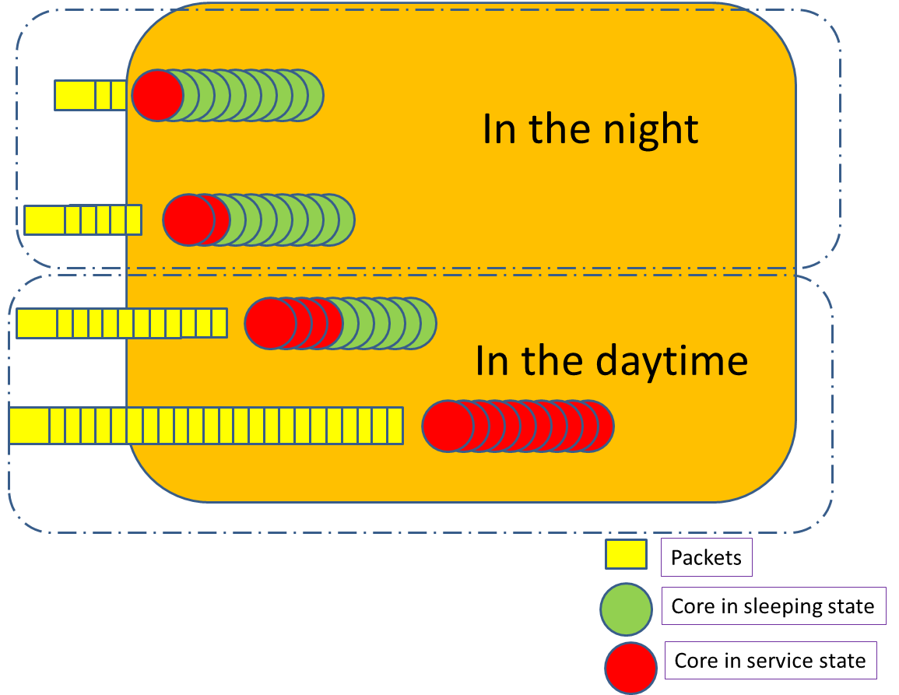

Product improvement proposal
Table of Contents
- Overview CR list
- Performance related
- Trouble shooting
- Take TRA in use, improve the bug tracing efficiency.
- Add one thin memory management layer for Simple executive enviroment.
- In SDK 3.0, there are new feature that support core-dump in simple excutive enviroment.
- Enhance the troubleshooting framework, for fast problem location.
- Call creation/deletion simulator on TT level(internal EITP)
- Traffic handling
- Common
Overview CR list
| ID | Name | Status | Effort(in unit of hour) | Priority |
|---|---|---|---|---|
| CR E0001 | Remove the lock for normal service in warming mechanism on EIPU | Under evaluation by PO | 1000 | medium |
| CR E0003 | Performance tunning in EIPU fastpath | Under evaluation by PO | 400 | medium |
| CR E0004 | Warming data refactory in EIPU | Under implementation | 100 | high |
| CR E0005 | Bypass VNB in TX direction on EIPU slowpath | Under evaluation by PO | 400 | medium |
| CR E0007 | Coredump support on EIPU fastpath | Under evaluation by PO | 500 | low |
| CR E0008 | Add one thin layer for memory management in simple executive enviroment | Under evaluation by PO | 500 | low |
| CR E0009 | Call creation_deletion simulator on EIPU | Under evaluation by PO | 300 | low |
| CR E0010 | Enhanced troubleshooting framework for intelligente and fast troubleshooting | Under evaluation by PO | ||
| CR E00012 | Dirty data need to be clean up during switch over | under planing in backlog | 100 | high |
Performance related
warming performance improvement – Need to check, whether the current performance is ok for trunk.
Currently, normal service is blocked by the warming, take an example, on EIPU, if the warming in process, all the call creation/deletion request is blocked, till the warming is finished. and the warming will cost more than 2 seconds. this time is depend on the TCP handling performance, and the size of the share memory on EIPU. so we have three possible solutions on this
- Improve the TCP handling performance
- Currently, the performance of TCP transmission is improved compare FPT2.3 with FPT1.40. result. currenty, RU40 is using FPT 1.40, so we need to digout, what is the change with latest FPT release for TCP handling performance.
- There is still performance gap between CSPU and EIPU, what lead this difference? only two condition check?
- From kernel 2.6 to 3.4, there are many patches for performance optimization
- Decrease the share memory usage
- structure refactory
- memory hole
- Change the warming mechanism, don't block the normal service during
warming.
- Currently, during warming, there is a big lock that will block the all the call creation/deletion service
- We can handle warming based on content,entry by entry. Wih this change we can remove the big lock, but just apply lock on entry level.
Profiling and tunning performance.
Currently, there is a big performance gap on EIPU, it's not possible to reach the target in RU50. so , what we can do?
- Profiling from archtecture of view, tunning
- Cache usage
- improve parallel
- lock usage
- Implement the RCU in simple executive
- we can consider to use ticket lock instead of spin lock. Octeon+, we have got a test result, the performance is not improved, we still need to check this in OcteonII.
- Send packet lock usage on octeon PKO. (atomic lock –> command queue lock)
- Take per core variable in use in statistic
- lock usage
- Re-design the statistic structure on EIPU, currently, there are some duplicate statistic in fastpath packet handling process, this increased the cycle cost of one single packet. based on the first analysis, there are many statistic can be removed, and the data can be calculated off the fast path process.
- In UDP handling process, there is a blocker, during get handler for different port range. we can optimize this part. Based on previous profiling data, 100cyles can be saved with this optimization
performance improvement in SDK3.0
Kernel changed from 2.6 to 3.0 in SDK3.0, many features are taken in with the new kernel. this will increase the performance for packet handling. if we can improve the performance in slow path, we can deploy more core into fast path for better performance on EIPU level.
by pass VNB in slowpath packet Tx phase
In VNB slowpath tx processing
the main routine is adding vlan header. this decrease the overall performance compare with CSPU we can use the original method in linux kernel to adding this vlan interface. and this will improve the performance of packet sending in slowpath.
Trouble shooting
Take TRA in use, improve the bug tracing efficiency.
Features in TRA
The trace control unit (TRA) is a trace buffer for CN68XX's coherent memory interconnect (CMI). There are four TRAs (TRA0-TRA3), one for each section of the CMI. TRA can be useful in many debug situations. When enabled, the TRA captures bus requests. Software can later read out the requests and generate a trace of the sequence of events on the CMI
- 1024 tracing buffer
- requests originating from cores or IOI devices
- address, command, and time information
- Interrupt generation
- Programmable filter
- partial or full match
- Programmable triggering
- partial or full match
- start and stop triggering
What can we get from TRA
TRA can trace problem on instructio level. it can buffer the instructions that have been issued from core or IOI devices. We can eveluate, how much benifit would we got based on the problem history in our area.
Add one thin memory management layer for Simple executive enviroment.
In SDK 3.0, there are new feature that support core-dump in simple excutive enviroment.
- The whole core-dump file is very useful in locating core-dump related problems, it can accelerate the fixing on this kind of problems. Both during future development and in bugfix.
Enhance the troubleshooting framework, for fast problem location.
- Technical support can use it more easily.
- Problem can be resovled more quickly
The current situation
Currently, there are huge commands, that can be used for troubleshooting for traffic related problems. These commands may be made from the following reasons
- Made together with the feature, work for tracing some feature related configuration, data structure, and statistic
- During handling some prontos or cases, we find some needs on on tracing something, so we add commands for locating the problem
- We got some requirment from A&S or product level troubleshooting, we need to add some commands to support there special need for collecting some informations. so we add commands here and there for this purpose.
We have implemented many commands, in fact, too many commands, but after survery on the usage of these commands, we can see, only less of the very basic commands are frequently used, most of them are made and never used again. maybe only the autor re-call it someday and use it. So, what brought this on?
The troubleshooting is very important, especially in our carrier-class equipment. Our customer concern the quality very much. If one critial case happend on site, The customer usually chalenge us:
- why did this happen?
- How could we prevent this happen again?
- Could we fix it as soon as possible.
- Is there some walkaround for a quick fix.
In fact, most of customer case is very difficult to be fixed asap, especially the traffic related problems. From my point of view, I see the following reasons:
- For debug the traffic related problem, we usually need more
information, we may need the problem happen and happen again,
and we can collect more and more information, we even need to
apply test patch in our customer's equipment. This will cost a
lot of time.
- Communication is a huge part
- The technical support usually can't collect the right information at the right time(usually this is very difficult, even we do it by ourself)
- Apply any critial operation need a application process for the operator. we need to wait for these approve.
- A lot of traffic related problem can't be located as traffic related problem at the very first phase, it is usually be analyzed by application, or OPE, and after days or weeks investigation, we got the change to see and analyze the problem.
- A lot of traffic related problem can't be reproduced easily,
especially on customer site. In fact most customer don't want
to see the problem again, but not reproduce it, so what
customer concern more is, they need a analyze report for the
problem.
- We don't have the chance to collect the information we need during problem happend
- We don't have the change to add debug information in the enviroment
- We don't have the change to control the equipment step by step for debuging
- We even don't have the change to see it again.
But, we need to give the analyze report for the problem. Usually the report have the following content
- What should be the reason for the problem?
- is there some patch to prevent it happen again?
- Is there some workaround if it happen again
- If we can't locate the root cause, what should we do for better analyzing the problem if it happen again?
- Is there some side effect of the operations
- such as patchs?
- walk-around?
- commands?
All in all, the analysing above can be summarize in two parts
- The weapons we have
- We have many weapons, but they are not well orgnized
- Many information are duplicated in different commands
- Many commands are not easy to be found. So they are not popular used
- We have commands for different purpose, but they can't communicate with each other, in another word, most of the commands are close. They are not designed to support each other for fighting with the enemy.
- We don't have very pratical user manual for the commands.
- During we design the weapon, we didn't consider our emeny very
much. That means our weapon can't work powerfully.
- Detect traffic releated problem at the very first time
- Collect relevant information needed for different problem automatically.
- Make some inteligent analysing before and after the problem happend.
- Give out recovery proposal at the very first time, like our alarm system, and do better.
- We have many weapons, but they are not well orgnized
- The enemy we meet We have state above more detailly.
More and more mcRNC are shipping to our customer. we may meet more and more enemy in future release. If we contitnue make new release, new development on this product, case will be worse. So we really need to enhance our weapon for the coming war.
What we should do
Clear up
- Summarize all the current commands, ensure there is no duplicate on command level.
- Write manual for these basic commands, for each commands, define the purpose and the scope. put them together with the code.
- Summarize the pevious prontos, seperate the prontos into different catelog from
the following aspects
- phenomenon – This is the input for early detect the problem is traffic realted, such as syslog, error counter, register, alarm
- information needed. – This is used to collect neccessary information in the live enviroment as much as possible.
- Summarize all the solutions, all the walkaround, connect them with phenomenon, define each one as one prescription
re-factory
- Check each command should be open, that means, these command can read normal text stream as input and output normal text stream for other commands. Currently, we design the tools, with a assemption, the user should be a engineer, change this mindset, think about, the user could also be another tool.
Build the relationship between the tools
- Tools should talk with each other. Based on the analyzing of the phenomenon and information needed.
- There should be a daemon, observing each phenomenon, collecting neccesarry
information continually. Once one problem happend, daemon will wake up neccessary
tools for handling different kind of phenomenon. And each neccessary snapshoot
will be recored into disk. The new awake tool will handle this problem then
- Collect neccessary information,
- Make inteligent analysing
- Take or give out recovery proposal based one each prescription
Call creation/deletion simulator on TT level(internal EITP)
- Decrease the integration time in new feature development
- More easy to reproduce problem in EITP.
- Can be used in module level testing. The needed resource can be configured easily. that means each module can test themself independently. All the requirement can be seperated in more detailed level. And problem is more easily to be located then.
Traffic handling
Defects in current warming logic
- During warming, only data structure for each entry is warmed, there is many status information in the data structure, such as error indication, and echo request sent, accompany with these status, there should be some timer, that are used to handle the timeout case. but these timer is not warmed to SP unit, that means, if switch over happen, these status change will not be handled, even if we can't receive the ack message for ever.
Dirty data need to be clean up during switch over
- After the WO unit changed to SP unit, there are many data is
sitll in the SP unit, such as the GTP bufferred data, the
timer.These data is expected to be clean up by the leg release
message, if the unit is switch back before the leg released,
these data will be available again. this will lead three possible error
- Packet misorder The bufferred packet is very old for this GTP tunnel, these data will be sent out right after the switch over, this will make packet misorder. but in fact, the very old data is not useful anymore right after the switch over.
- status error Because there are many timer may timeout and report many error in syslog.
- These resource is wasted before the leg is released.
j** Hotplug on EIPU/CSPU/USPU
- Increase the load balance on fastpath and slowpath. if the load on slowpath is high, we can
- Increase the performance in overload case
Got the information from Xiaobo, that, there is a defect in 6wind, the hotplug can't be supported on the noDE with 6wind deployed, Based on current knowlege of the 6wind, we still don't know the root cause on this, we may need to get contact with 6wind for more details
Current GTP buffering mechanism lead huge traffic burst
In GTP buffering feature, If the buffered packet take mass buffer, once GTPU module got stop buffer message, Huge traffic will be sent out, this lead terrible burst and may lead other normal traffic lost. Based on the current testing result, the dropping of normal traffic has been verified. I need to dig this more detail, about the following aspects
- What kind of normal traffic will be effected
- Currently, BE,AF1,AF2 is sharing the same priority, that means only these three phb class will be effected, if there is huge burst from GTP buffering traffic
- What kind of behavior will be monitored by operator if these
traffic is lost
- There will be a short time burst that lead short time packet lost on BE,AF1,AF2 traffic class. because these three phb class means low priority traffic, so the operator may don't care about this lost very much.
- Is there some other effect because of this huge burst, such as
lead some unrecoverable hurt on the system.
- Based on current testing, only packet lost is the direct result because of this burst
- What could we do to fix this.
- We may need to add one mechanism in GTP buffering. to shape the traffic toward PKO at one time slot. This is a bit complex based on current implementation.
- Based on the analysing about, there is minor problem that is visible to our customer, so I proposal don't change this part currently.
NAPI in fastpath
- If we can have a NAPI similar mechanism in fastpath, we can have less core running if the load is very low.
- In case the load is very high, more core can be wake up
- This can save the power consumption
Take an user case, there is very little work at night for a RNC, so most of the core is also sleeping as the pepole in the city. in this mode, only very little power consumed in the whole night. Then the morning comes, people alive and more traffic comes to RNC, more and more core also wake up for handling traffic in best effort mode. If the power consumption is really a valueable point for our customer, we can make some PoC to evaluate, how many power can we save and is there some side effect with this change. 
Common
Hotpatching
- upgrade image with zero downtime
- Apply troubleshooting patches in a live enviroment.